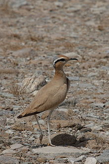
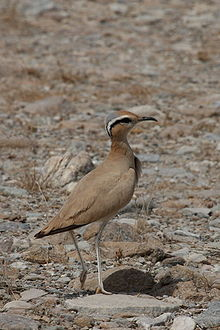

| Cream-coloured Courser | |
|---|---|
|  | |
| Dibba, United Arab Emirates | |
| Conservation status | |
| Binomial name | |
| Cursorius cursor Latham, 1787 |
| Cream-coloured Courser | |
|---|---|
|  | |
| Dibba, United Arab Emirates | |
| Conservation status | |
| Binomial name | |
| Cursorius cursor Latham, 1787 |
The Cream-colored Courser, Cursorius cursor, is a wader in the pratincole and courser family, Glareolidae.
Although classed as waders, these are birds of dry open country, preferably semi-desert, where they typically hunt their insect prey by running on the ground.
These coursers are found in Canary Islands, north Africa and southwest Asia. Their two eggs are laid in a ground scrape. They are partially migratory, with northern and northwestern birds wintering in India, Arabia and across the southern edge of the Sahara. Some birds also breed in the southern desert regions in northwestern India and Pakistan.[1]
They are rare north of the breeding range, but this species has occurred as far away as Finland, Ireland and Great Britain.
These birds have long legs and long wings. They have slightly downcurved bills. The body plumage is sandy in colour, fading to whitish on the lower belly. The upperwing primary feathers and the underwings are black. The crown and nape are grey, and there is a black eyestripe and white supercilium.
In flight this species resembles a pratincole, with its relaxed wingbeats, pointed wings and dark underwings.

{kind=link}